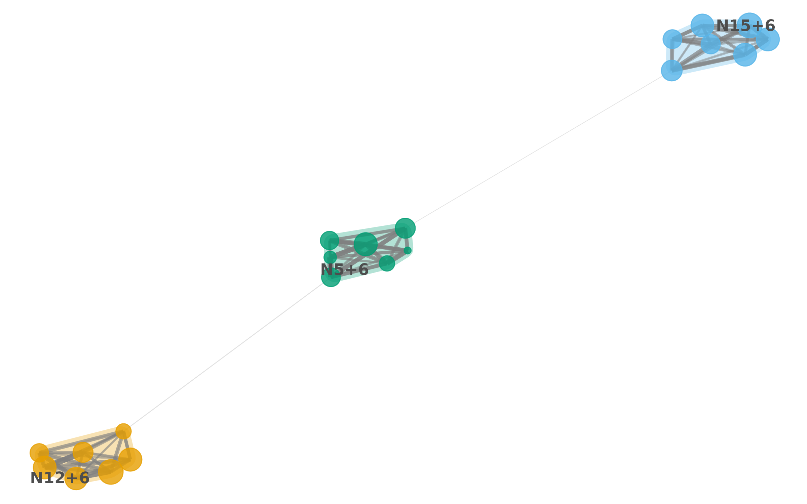

1. Introduction
moneca_flow() is the flow-based clustering backend for
MONECA. It clusters the mobility graph under the Map Equation (Rosvall
& Bergstrom, 2008): a random walker traverses the directed mobility
network and modules are extracted as regions where the walker tends to
stay for many steps before transitioning away. This reading aligns
directly with the substantive semantics of the data — workers flow
through jobs, and modules trap flow.
Three backends cover complementary views of the same mobility matrix:
-
moneca::moneca_fast()— clique enumeration on the thresholded relative-risk (RR) matrix. -
moneca_sbm()(direction D2) — hierarchical DC-SBM on the RR residual. Seevignette("monecascale-sbm")for the theoretical bridge and an empirical parity experiment. -
moneca_bipartite()(direction D1) — hierarchical DC-LBM on rectangular mobility, joint on both sides. -
moneca_flow()(direction D3, this vignette) — Infomap on raw mobility flow, with a recursive wrapper that synthesises an approximate hierarchy.
The SBM view clusters nodes that are stochastically equivalent under the independence null; the flow view clusters nodes that the walker visits together. The two views frequently agree in the high-signal regime and may diverge where directional asymmetry matters. Section 7 shows a side-by-side comparison on a single fixture.
2. The Map Equation
The Map Equation frames community detection as a lossless coding
problem. Given a partition M of the graph into modules, the
walker’s trajectory is encoded with a two-level codebook: an index-level
codebook for module-to-module transitions, and one per-module codebook
for within-module node visits plus a module exit symbol. The average
number of bits per step under this encoding is the codelength
where q_↶ is the total module-switching rate,
H(Q) is the entropy of the index codebook,
p_k^↻ is the within-module use rate of module
k, and H(P_k) is the entropy of its
within-module codebook. Minimising L(M) is equivalent to
maximising the compression of the walker’s trajectory: modules that trap
flow for many steps shorten the description, modules that shuffle flow
around lengthen it.
In MONECA the edges are directed mobility counts, so the stationary
distribution used to weight the entropies is computed from PageRank on
the directed graph. moneca_flow() computes
L(M) directly on the full graph for every level of the
hierarchy, so codelength values are comparable across levels rather than
inferred from sub-module fits.
3. Flat vs recursive hierarchy
igraph::cluster_infomap(), the engine behind the
"igraph" backend, returns a flat partition. To expose a
hierarchy compatible with moneca’s multi-level contract,
moneca_flow() applies a recursive wrapper: for level 2 it
re-runs flat Infomap on each level-1 module’s induced subgraph; for
level 3 it recurses once more on each level-2 sub-module. Parent modules
smaller than two nodes become singleton children.
This is an approximation to true hierarchical Infomap. The orthodox hierarchical Map Equation (Rosvall et al., 2009) jointly optimises the codelength of the full hierarchy, trading off top-level compression against sub-module compression in a single criterion. Recursive flat fits instead optimise each level independently and then stack the results. On well-separated block structures the two agree closely; on ambiguous or deeply nested hierarchies the recursive approximation can under- or over-fit specific levels.
Users who need joint-MDL hierarchical Infomap should watch for a
bioregion-backed or "infomap_cpp" backend
planned for a future release. The recursive flat approach is shipped now
because it keeps the dependency surface to igraph
alone.
4. Quick start
A minimal end-to-end run on a synthetic block-Poisson fixture:
library(monecascale)
# 1. inline block-Poisson fixture -----
set.seed(2026)
n <- 21
block <- rep(1:3, each = 7)
lambda <- outer(block, block, function(g, h) ifelse(g == h, 6, 0.2))
M <- matrix(stats::rpois(n * n, lambda = lambda), n, n)
diag(M) <- 0
rownames(M) <- colnames(M) <- paste0("N", seq_len(n))
# 2. flow fit -----
out <- monecascale::moneca_flow(M, depth = 2L, seed = 2026)
out
#>
#> ================================================================================
#> moneca MOBILITY ANALYSIS RESULTS
#> ================================================================================
#>
#> OVERALL MOBILITY PATTERNS
#> -------------------------------------------------------------------------------
#> Overall Population Mobility Rate: 100.0%
#> Average Mobility Concentration (all levels): 94.0%
#>
#> HIERARCHICAL SEGMENTATION ANALYSIS
#> -------------------------------------------------------------------------------
#>
#> Internal Mobility Within Segments (%):
#> Level 1 Level 2 Level 3
#> 0.0 93.8 93.8
#>
#> Mobility Concentration in Significant Pathways by Level (%):
#> Level 1 Level 2 Level 3
#> 94.3 93.8 93.8
#>
#> Network Structure by Level:
#> Level 1 Level 2 Level 3
#> -------------------------------------------------------------------------------
#> Active Segments/Classes: 21 3 3
#> Significant Edges: 128 0 0
#> Network Density: 0.305 0.000 0.000
#> Isolated Segments: 0 3 3
#>
#> DETAILED WEIGHTED DEGREE DISTRIBUTIONS (STRENGTH)
#> -------------------------------------------------------------------------------
#>
#> Total Weighted Connections (Strength In + Out):
#> Min Q1 Median Mean Q3 Max
#> Level 1 35.96 37.43 38.78 39.83 41.19 45.59
#> Level 2 0.00 0.00 0.00 0.00 0.00 0.00
#> Level 3 0.00 0.00 0.00 0.00 0.00 0.00
#>
#> Outward Mobility Strength (Weighted Out-Degree):
#> Min Q1 Median Mean Q3 Max
#> Level 1 16.88 18.69 19.4 19.91 21.26 22.68
#> Level 2 0.00 0.00 0.0 0.00 0.00 0.00
#> Level 3 0.00 0.00 0.0 0.00 0.00 0.00
#>
#> Inward Mobility Strength (Weighted In-Degree):
#> Min Q1 Median Mean Q3 Max
#> Level 1 17.16 18.83 19.49 19.91 20.71 23.63
#> Level 2 0.00 0.00 0.00 0.00 0.00 0.00
#> Level 3 0.00 0.00 0.00 0.00 0.00 0.00
#>
#> Edge Weight Distribution (Relative Risk Values):
#> Min Q1 Median Mean Q3 Max
#> Level 1 1 2.49 3.35 3.27 4.16 6.38
#> Level 2 NA NA NA NaN NA NA
#> Level 3 NA NA NA NaN NA NA
#>
#> ================================================================================
# 3. codelength trace and per-level block counts -----
out$flow_diagnostics$codelength_per_level
#> [1] 3.685405 3.235813
out$flow_diagnostics$n_blocks_per_level
#> [1] 3 3out is a regular moneca-class object:
segment.list, mat.list, and
segment_metadata follow the same contract as
moneca::moneca_fast(). The $flow_diagnostics
slot adds the flow- specific trace (codelength per level, block counts,
backend, depth). $flow_diagnostics$mdl_per_level is an
alias of $codelength_per_level so tooling keyed on
$mdl_per_level consumes flow output unchanged.
5. Auto-level selection
The auto-level machinery (auto_segment_levels(),
direction D6) composes with flow fits without modification. The MDL
criterion reads the codelength trace under the hood; diagnostics are
exposed in a codelength column rather than mdl
to match the flow semantics.
# 1. post-hoc pick from a full-hierarchy fit -----
pick <- monecascale::auto_segment_levels(out, method = "mdl")
pick
#> <auto_segment_levels> method=mdl backend=flow picked level=3 of 2
#> level n_blocks codelength mi_to_next score
#> 2 3 3.685405 NA 3.685405
#> 3 3 3.235813 NA 3.235813
pick$diagnostics
#> level n_blocks codelength mi_to_next score
#> 1 2 3 3.685405 NA 3.685405
#> 2 3 3 3.235813 NA 3.235813The wrapper form trims the fit to the picked level in one call:
out_auto <- monecascale::moneca_flow(
M,
depth = 2L,
seed = 2026,
segment.levels = "auto",
auto_method = "mdl"
)
# Number of levels retained after trimming, plus the picker record
length(out_auto$segment.list)
#> [1] 3
out_auto$auto_level$level
#> [1] 3method = "mi_plateau" works identically on flow fits: it
reads memberships from segment.list and never touches the
backend trace, so it is backend-agnostic.
6. Downstream compatibility
Flow fits reuse moneca’s entire analysis and plotting stack. Membership extraction and segment quality diagnostics run unchanged:
# 1. level-2 memberships as a vector -----
mem_l2 <- moneca::segment.membership(out, level = 2)
head(mem_l2)
#> name membership
#> 1 N1 2.1
#> 2 N2 2.1
#> 3 N3 2.1
#> 4 N4 2.1
#> 5 N5 2.1
#> 6 N6 2.1
# 2. moneca's segment-quality summary on the flow fit -----
moneca::segment.quality(out)
#> Membership 1: Segment 1: within.mobility 1: share.of.mobility 1: Density
#> N16 3.3 16 0 0.056 NaN
#> N17 3.3 17 0 0.053 NaN
#> N15 3.3 15 0 0.052 NaN
#> N21 3.3 21 0 0.052 NaN
#> N19 3.3 19 0 0.048 NaN
#> N18 3.3 18 0 0.046 NaN
#> N20 3.3 20 0 0.045 NaN
#> N12 3.2 12 0 0.056 NaN
#> N9 3.2 9 0 0.053 NaN
#> N11 3.2 11 0 0.052 NaN
#> N10 3.2 10 0 0.051 NaN
#> N14 3.2 14 0 0.047 NaN
#> N13 3.2 13 0 0.044 NaN
#> N8 3.2 8 0 0.041 NaN
#> N5 3.1 5 0 0.053 NaN
#> N7 3.1 7 0 0.047 NaN
#> N6 3.1 6 0 0.045 NaN
#> N4 3.1 4 0 0.044 NaN
#> N2 3.1 2 0 0.041 NaN
#> N3 3.1 3 0 0.038 NaN
#> N1 3.1 1 0 0.036 NaN
#> 1: Nodes 1: Max.path 1: share.of.total 2: Segment 2: within.mobility
#> N16 1 0 0.056 3 0.946
#> N17 1 0 0.053 3 0.946
#> N15 1 0 0.052 3 0.946
#> N21 1 0 0.052 3 0.946
#> N19 1 0 0.048 3 0.946
#> N18 1 0 0.046 3 0.946
#> N20 1 0 0.045 3 0.946
#> N12 1 0 0.056 2 0.935
#> N9 1 0 0.053 2 0.935
#> N11 1 0 0.052 2 0.935
#> N10 1 0 0.051 2 0.935
#> N14 1 0 0.047 2 0.935
#> N13 1 0 0.044 2 0.935
#> N8 1 0 0.041 2 0.935
#> N5 1 0 0.053 1 0.933
#> N7 1 0 0.047 1 0.933
#> N6 1 0 0.045 1 0.933
#> N4 1 0 0.044 1 0.933
#> N2 1 0 0.041 1 0.933
#> N3 1 0 0.038 1 0.933
#> N1 1 0 0.036 1 0.933
#> 2: share.of.mobility 2: Density 2: Nodes 2: Max.path 2: share.of.total
#> N16 0.352 0.7142857 7 2 0.352
#> N17 0.352 0.7142857 7 2 0.352
#> N15 0.352 0.7142857 7 2 0.352
#> N21 0.352 0.7142857 7 2 0.352
#> N19 0.352 0.7142857 7 2 0.352
#> N18 0.352 0.7142857 7 2 0.352
#> N20 0.352 0.7142857 7 2 0.352
#> N12 0.344 0.7142857 7 2 0.344
#> N9 0.344 0.7142857 7 2 0.344
#> N11 0.344 0.7142857 7 2 0.344
#> N10 0.344 0.7142857 7 2 0.344
#> N14 0.344 0.7142857 7 2 0.344
#> N13 0.344 0.7142857 7 2 0.344
#> N8 0.344 0.7142857 7 2 0.344
#> N5 0.305 0.7142857 7 2 0.305
#> N7 0.305 0.7142857 7 2 0.305
#> N6 0.305 0.7142857 7 2 0.305
#> N4 0.305 0.7142857 7 2 0.305
#> N2 0.305 0.7142857 7 2 0.305
#> N3 0.305 0.7142857 7 2 0.305
#> N1 0.305 0.7142857 7 2 0.305
#> 3: Segment 3: within.mobility 3: share.of.mobility 3: Density 3: Nodes
#> N16 3 0.946 0.352 0.7142857 7
#> N17 3 0.946 0.352 0.7142857 7
#> N15 3 0.946 0.352 0.7142857 7
#> N21 3 0.946 0.352 0.7142857 7
#> N19 3 0.946 0.352 0.7142857 7
#> N18 3 0.946 0.352 0.7142857 7
#> N20 3 0.946 0.352 0.7142857 7
#> N12 2 0.935 0.344 0.7142857 7
#> N9 2 0.935 0.344 0.7142857 7
#> N11 2 0.935 0.344 0.7142857 7
#> N10 2 0.935 0.344 0.7142857 7
#> N14 2 0.935 0.344 0.7142857 7
#> N13 2 0.935 0.344 0.7142857 7
#> N8 2 0.935 0.344 0.7142857 7
#> N5 1 0.933 0.305 0.7142857 7
#> N7 1 0.933 0.305 0.7142857 7
#> N6 1 0.933 0.305 0.7142857 7
#> N4 1 0.933 0.305 0.7142857 7
#> N2 1 0.933 0.305 0.7142857 7
#> N3 1 0.933 0.305 0.7142857 7
#> N1 1 0.933 0.305 0.7142857 7
#> 3: Max.path 3: share.of.total
#> N16 2 0.352
#> N17 2 0.352
#> N15 2 0.352
#> N21 2 0.352
#> N19 2 0.352
#> N18 2 0.352
#> N20 2 0.352
#> N12 2 0.344
#> N9 2 0.344
#> N11 2 0.344
#> N10 2 0.344
#> N14 2 0.344
#> N13 2 0.344
#> N8 2 0.344
#> N5 2 0.305
#> N7 2 0.305
#> N6 2 0.305
#> N4 2 0.305
#> N2 2 0.305
#> N3 2 0.305
#> N1 2 0.305ggraph-based plotting is gated on the optional ggraph
dependency:
moneca::plot_moneca_ggraph(out, level = 2)
7. SBM vs Flow on the same fixture
The SBM and flow views answer different structural questions on the same data. Running both on a single fixture makes the comparison concrete. We reuse the fixture from section 4 and fit both backends with two recursion / hierarchy levels.
# 1. flow fit -----
fit_flow <- monecascale::moneca_flow(M, depth = 2L, seed = 2026)
# 2. SBM fit (greed backend) -----
fit_sbm <- monecascale::moneca_sbm(
M,
backend = "greed",
seed = 2026
)
# 3. level-2 memberships from each (as vectors) -----
mem_flow <- moneca::segment.membership(fit_flow, level = 2)$membership
mem_sbm <- moneca::segment.membership(fit_sbm, level = 2)$membership
length(unique(mem_flow))
#> [1] 3
length(unique(mem_sbm))
#> [1] 3If mclust is available we can quantify agreement with
the adjusted Rand index and normalised mutual information.
ari <- mclust::adjustedRandIndex(mem_flow, mem_sbm)
nmi <- {
# 1. plug-in NMI from a contingency table -----
tab <- table(mem_flow, mem_sbm)
p <- tab / sum(tab)
pr <- rowSums(p)
pc <- colSums(p)
H <- function(x) {
x <- x[x > 0]
-sum(x * log(x))
}
mi <- sum(p[p > 0] * log(p[p > 0] / outer(pr, pc)[p > 0]))
mi / sqrt(H(pr) * H(pc))
}
c(ARI = ari, NMI = nmi)
#> ARI NMI
#> 1 1On block-Poisson fixtures with clean planted structure the two backends converge: flow and SBM recover the same partition because both the stationary flow and the stochastic-equivalence signal point at the same blocks. They diverge when directional asymmetry carries real structure — for instance, when a transient module feeds flow into an absorbing one: flow tends to merge them into a single trap, SBM keeps them distinct because their in/out degree profiles differ. Running both and inspecting disagreement is a practical diagnostic.
8. Limitations
-
Recursive flat approximates joint-MDL hierarchical
Infomap. The shipped wrapper optimises each level
independently. For strict hierarchical codelength minimisation use the
standalone Infomap C++ binary; a
bioregion-backed backend is planned for v0.5.0. -
No overlapping communities. The underlying Map
Equation supports overlapping modules via the two-level memory-based
variant, but
moneca_flow()produces hard partitions only. The moneca contract assumes hard membership vectors. -
Raw mobility counts only.
moneca_flow()does not apply the RR transformation. Users who want RR-weighted flow clustering should preprocess the matrix themselves, or reach formoneca_sbm()which consumes RR natively via the DC-SBM bridge. -
Single backend in 0.4.0. Only the
igraphbackend is shipped. The"infomap_cpp"keyword is reserved but not wired up. -
Depth capped at 3. The recursive wrapper supports
depthin1:3. Deeper hierarchies rarely add signal and are better served by auto-level selection on a full SBM hierarchy.
9. References
- Rosvall, M., & Bergstrom, C. T. (2008). Maps of random walks on complex networks reveal community structure. PNAS, 105(4), 1118-1123.
- Rosvall, M., Axelsson, D., & Bergstrom, C. T. (2009). The map equation. European Physical Journal Special Topics, 178, 13-23.
- Satopaa, V., Albrecht, J., Irwin, D., & Raghavan, B. (2011). Finding a “Kneedle” in a Haystack: Detecting Knee Points in System Behavior. 31st International Conference on Distributed Computing Systems Workshops, 166-171.
- Karrer, B., & Newman, M. E. J. (2011). Stochastic blockmodels and community structure in networks. Physical Review E, 83, 016107.